地政学
スコピエはバルカン中央部の内陸首都です。ギリシャ、セルビア、コソボ、ブルガリア、アルバニアへ向かう道が近く、NATO加盟とEU交渉、名称後の外交、民族政治が日常に接続します。小国の針路を映す街です。境界も近いです。
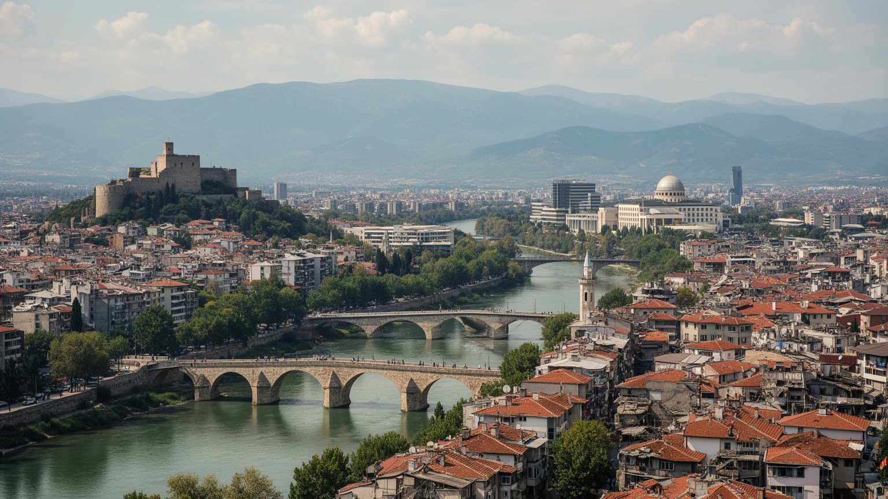
🇲🇰 北マケドニア共和国 / 首都 / World City Atlas
ヴァルダル川の盆地に、オスマン期の旧バザール、地震後の近代計画、北マケドニアの国家政治、民族と宗教の境界、物流回廊、峡谷観光が重なるバルカンの首都です。
都市の骨格
スコピエは北マケドニア最大の都市であり、政治、大学、商業、交通、文化、宗教、移住の結節点です。中心の石橋を渡るだけで、オスマン期の旧市街、社会主義期の計画、近年の象徴建築が連続して見えてきます。
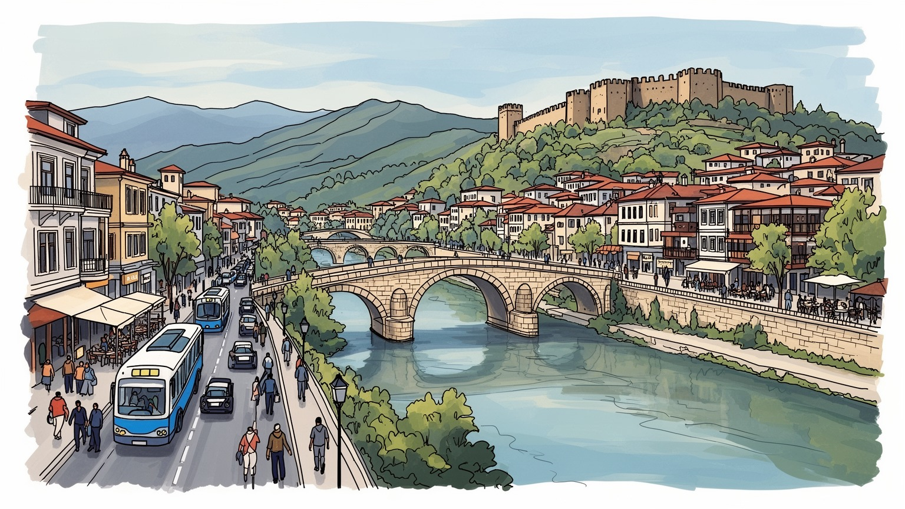
スコピエはバルカン中央部の内陸首都です。ギリシャ、セルビア、コソボ、ブルガリア、アルバニアへ向かう道が近く、NATO加盟とEU交渉、名称後の外交、民族政治が日常に接続します。小国の針路を映す街です。境界も近いです。
行政、商業、物流、建設、製造、通信、教育、観光が雇用を作ります。地方から学生と労働者が集まり、海外移住や送金も家計を支えます。賃金、住宅、公共部門への期待が、若い世代の選択を左右します。家族も悩む街です。
旧バザールのモスク、正教会、カトリック教会、ロマやアルバニア系の生活、マケドニア語文化が近くにあります。宗教は観光資源だけでなく、祝祭、食、家族、記憶、近隣関係を形づくる力です。多声的な首都です。
旅行者は石橋、要塞、旧バザール、博物館、マトカ峡谷を巡ります。住民は渋滞、冬の大気、住宅価格、学校、行政手続き、川沿いの散歩を使い分けます。観光の華やかさの奥に、盆地都市の日常があります。生活も濃いです。
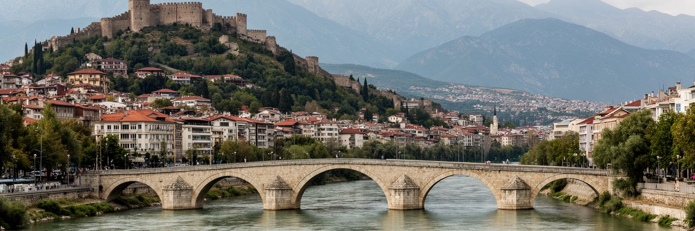
スコピエはヴァルダル川が作る盆地の中心にあります。川は市街を東西へ切り、石橋は旧バザールと現代的な中心広場を結びます。北にはスコピエ要塞が丘の上に残り、南側には官庁、商業施設、大学、住宅地が広がります。この地形は都市の印象を強く決めます。山に囲まれた内陸の首都であるため、夏の熱、冬の霧、大気の滞留、河川管理が生活に近く、交通路は谷筋に沿って伸びます。ヴァルダル川の流域は、ギリシャ方面の港、セルビア方面の道路、コソボやブルガリアへの接続を意識させる回廊でもあります。スコピエを単なる行政都市として見ると、この地理的な緊張を見落とします。川沿いの遊歩道や広場には観光客が集まりますが、橋を渡るたびに言語、宗教、商店、建物の年代が変わります。旧市街側の密度と南岸の広場的な空間は、都市が異なる時代を接ぎ合わせながら成長してきたことを示します。石橋は絵になる名所であると同時に、首都の社会的な距離を測る場所です。川が分けるのではなく、分けられた時間を見える形で並べるからです。朝の通勤、夕方の散歩、祭礼、デモ、観光の写真が同じ橋を使い、国家の中心と日常の移動が重なります。盆地の地理を理解すると、スコピエが小国の首都でありながら、交通、政治、記憶の重い結節点であることが分かります。水辺の小さな変化も、都市の関係を映します。
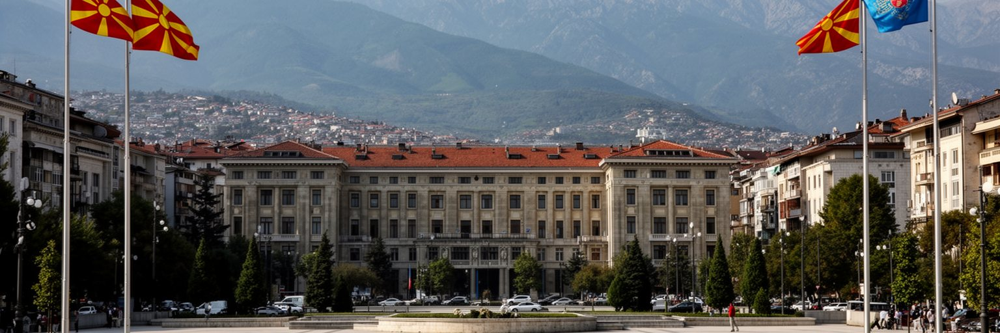
スコピエは北マケドニアの政治的な心臓です。議会、政府、省庁、裁判所、大使館、政党本部が集まり、国内の制度改革、民族間の権力分担、NATO加盟後の安全保障、EU加盟交渉が都市の日常と結びつきます。国名をめぐるギリシャとの長い対立はプレスパ合意で大きく動きましたが、名称、歴史、言語、アイデンティティの問題は今も公共空間の記念碑や政治言説に影を落とします。ブルガリアとの歴史認識、コソボとの関係、アルバニア系住民の政治参加、セルビアやギリシャへの経済回廊も、首都の外交感覚を形づくります。スコピエでは国家政治が遠い議場だけで進むのではありません。広場での集会、選挙ポスター、公共放送、カフェの議論、行政手続きの列を通じて、市民が制度の成否を毎日経験します。小さな国の首都であるため、政治家、官僚、記者、市民団体、学生の距離は近く、政策の不満もすぐに街路へ現れます。外交上の妥協は国際的には前進でも、住民には誇りや不安の問題として受け止められます。だからスコピエの政治空間は、同盟参加の成功と、民主主義、汚職対策、法の支配、少数者の権利をめぐる未完の課題を同時に映します。首都の成熟は、記念碑の大きさではなく、異なる記憶を持つ市民が制度を信頼できるかで測られます。信頼を作る行政の細部が、外交の成果を生活へ近づけます。
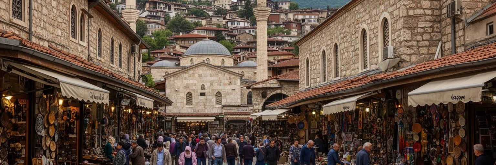
スコピエ旧バザールは、都市の多民族性を最も濃く感じられる場所です。石畳の路地にはモスク、ハマム、キャラバンサライ、職人店、宝飾店、飲食店、茶を飲む人々が並び、オスマン期から続く商業の時間が残ります。マケドニア人、アルバニア人、トルコ系、ロマ、ボスニア系、その他の住民が同じ都市を共有してきた歴史は、言語、姓、食、音楽、宗教施設、商売の作法に表れます。ただし多民族性は、観光用の美しい言葉だけではありません。二〇〇一年の武力衝突後のオフリド枠組み合意、言語権、自治体政治、教育の分離、雇用機会、記念碑の意味づけは、今も社会の感情を揺らします。旧バザールでは、買い物や食事の気軽さの背後に、共同生活の長い交渉があります。観光客は香辛料、銀細工、ケバブ、古い建物に目を向けますが、住民にとっては家族経営の店、金曜礼拝、結婚式の準備、日用品の調達、近所づきあいの場所です。市場の密度は、中心広場の記念碑的な空間とは違う公共性を持ちます。狭い路地では人が避け合い、挨拶をし、交渉し、噂を聞き、都市の情報が流れます。スコピエを理解するには、民族を固定された区分として見るのではなく、日々の商売と近隣関係の中で調整される関係として読む必要があります。旧バザールはその実践の舞台です。古い店先の会話が、共存の現実を静かに支えます。
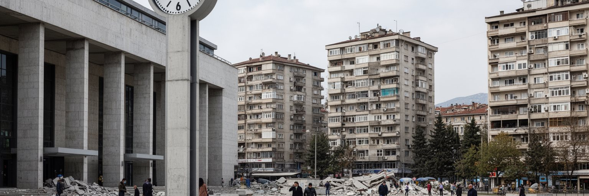
一九六三年の大地震はスコピエの近代史を決定づけました。多くの建物が壊れ、多数の犠牲者と避難者が出た後、都市はユーゴスラビアだけでなく国際社会の支援を受けて復興へ向かいました。国連の関与、国内外の都市計画家、建築家の提案が集まり、丹下健三を含むチームの計画は、交通、中心部、公共施設、住宅の再編に大きな影響を与えました。現在のスコピエには、震災前のオスマン的な街路、社会主義期の近代建築、復興住宅、後年の新古典風の象徴建築が重なります。駅の止まった時計は災害記憶の象徴として知られますが、復興の本質は記念物だけではありません。家を失った人々がどこへ移り、どの地区が新しく整備され、どの公共施設が都市の信頼を支えたかにあります。復興計画はスコピエを国際的な実験都市にしましたが、すべてが理想通りに実現したわけではありません。資金、政治、人口増加、後の市場化が計画を変え、空いた土地や公共空間の使い方も変わりました。それでも震災後の経験は、スコピエに災害、連帯、近代化、都市の再設計という強い記憶を残しています。地震を読むことは、街が壊れた過去だけでなく、都市がどのような社会を作り直そうとしたかを読むことです。現在の建築の混在は、復興の理想とその後の政治的選択の両方を語っています。防災の記憶は今の計画にも必要です。
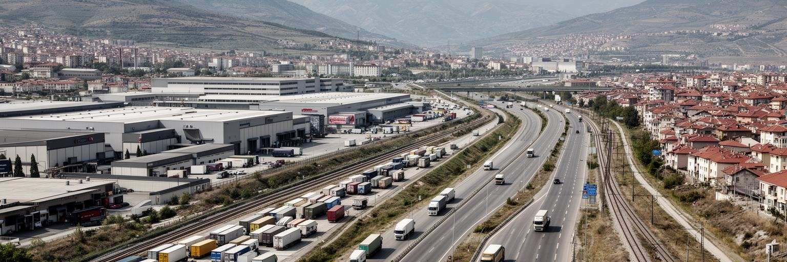
スコピエの経済は、首都機能だけでなく、商業、物流、軽工業、建設、金融、通信、教育、公共サービスに支えられます。北マケドニアは小さな内陸国ですが、ヴァルダル回廊を通じてギリシャの港、セルビア方面の市場、ブルガリアやコソボへの道路と結びます。スコピエ周辺には工業団地、倉庫、食品加工、金属、繊維、自動車部品関連の企業があり、輸出志向の製造業と国内市場向けサービスが並びます。首都には省庁や大学、病院、メディア、金融機関が集まるため、安定した公共部門の仕事を求める人も多いです。一方で、若者の失業、技能と求人のずれ、低賃金、国外就労への期待は根強く、ドイツ、スイス、イタリアなどへ向かう移住や送金が家計と住宅投資を支えます。スコピエの労働を理解するには、オフィス街だけでなく、郊外の工場、建設現場、バスで通勤する人、旧バザールの自営業、カフェのサービス労働を見る必要があります。物流拠点としての立地は強みですが、通関、道路品質、鉄道の更新、エネルギー価格、地域政治の安定に影響されます。EU市場に近いことは機会である一方、国内の賃金水準を上げなければ、熟練者は外へ流れます。首都の産業政策は、投資誘致だけでなく、職業教育、女性の雇用、公共交通、住宅費を含めて考える必要があります。働く場所と暮らす場所の距離が、都市の公平さを決めます。
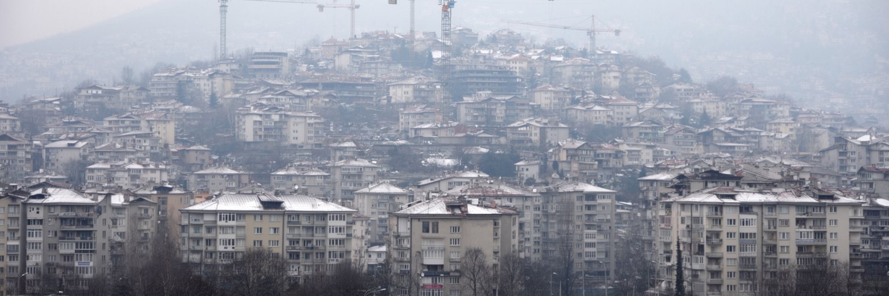
スコピエの都市形態は、旧市街、社会主義期の集合住宅、震災後の復興地区、近年の民間開発、郊外の住宅地が重なってできています。地方からの移住、大学進学、公共部門の集中、ディアスポラ資金、投資目的の不動産は、住宅需要を押し上げます。中心部や人気地区では新しい集合住宅が増え、山麓や郊外にも戸建てや低層住宅が広がります。建設は雇用を作り、都市の近代化を示しますが、無秩序に進めば交通渋滞、駐車、学校不足、緑地の減少、下水や排水の負担、大気汚染を悪化させます。盆地にあるスコピエでは、都市拡大と空気の問題が特に結びつきます。冬には暖房、古い車両、気象条件が重なり、空気が重くなる日があります。住宅の質や暖房費は、所得格差として健康にも影響します。新しい建物が増えても、歩道が狭く、公共交通が不便で、近くに公園や学校がなければ、生活の質は上がりません。スコピエを住宅から読むには、華やかな中心広場ではなく、通勤時間、団地の中庭、子どもの遊び場、老朽住宅の断熱、ロマ地区の生活環境まで見る必要があります。都市の成長は単なる床面積ではなく、誰が手頃に住めるか、どれだけ清い空気を吸えるか、歩いて用事を済ませられるかで評価されます。住宅政策は環境政策であり、社会政策でもあります。日々の住まいが、首都の公正さを最も近く示します。
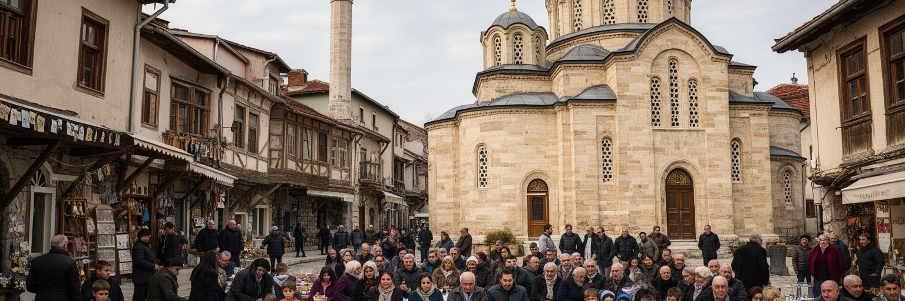
スコピエの宗教風景は、都市の多層性をよく示します。旧バザール周辺にはモスクが立ち、正教会の聖堂、カトリック教会、修道院、墓地、宗教学校、家族の祝祭が市内各所にあります。イスラムと正教の存在は歴史的な支配や民族の記憶と結びますが、日常では礼拝、断食月、復活祭、結婚式、葬儀、名前の日、食卓の習慣として現れます。信仰は対立の線として語られがちですが、同じ職場、大学、病院、バス、商店で人々は日々交わります。宗教施設は祈りの場であるだけでなく、貧困者への支援、家族の相談、地域の記憶、観光の導線を担います。一方で、宗教と民族政治が重なる場面では、記念碑、建物の場所、言語表示、歴史解釈が緊張を帯びます。スコピエの公共空間では、世俗的な若者文化と宗教的な家族行事が近くにあります。昼は大学やカフェで過ごす若者が、夕方には家族の祝祭や礼拝へ戻ることも珍しくありません。旧バザールの呼び声、教会の鐘、広場の音楽は、都市が一つのリズムでは動いていないことを教えます。スコピエを宗教から読むには、施設の美しさだけでなく、信仰が誰に安心を与え、誰を境界の外へ置くのかを見なければなりません。多宗教都市の寛容は自然に続くものではなく、教育、近所づきあい、政治の言葉によって毎日保たれます。祈りの時間は、街の記憶を次の世代へ渡します。
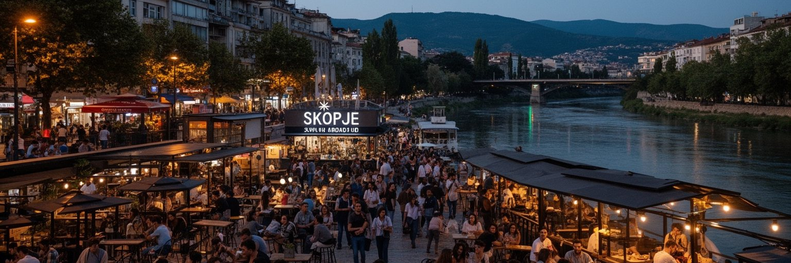
スコピエは北マケドニアの文化と教育の中心でもあります。大学、劇場、映画祭、音楽、書店、テレビ局、独立系メディア、ギャラリー、カフェが集まり、若者はここで学び、働き、友人を作り、国外への道も探します。マケドニア語の文学や演劇、アルバニア語文化、ロマ音楽、バルカンのポップカルチャー、トルコや欧州との接点が混ざり、首都の表現は一つの民族文化だけでは説明できません。カフェは社交の場所であると同時に、就職情報、政治談義、語学学習、起業の相談、帰国した親族との再会の場です。若者の生活には明るさがありますが、賃金の低さ、雇用の不安、住宅費、政治への不信、国外移住への誘惑もあります。英語、ドイツ語、イタリア語を学び、EU圏で働くことを考える人は多く、ディアスポラとのつながりは音楽、消費、価値観を変えます。スコピエの文化を読むには、公式の博物館や巨大な像だけでなく、小さなライブ会場、大学の廊下、映画祭の列、旧市街の食堂、ロマの演奏、若いデザイナーの店を見る必要があります。都市の創造性は、異なる言語や記憶が交わる摩擦から生まれます。公共空間が開かれ、少数者や女性が安心して表現でき、文化労働者が生活できる条件が整えば、スコピエは小国の首都を超えた発信力を持てます。若者が残りたいと思える都市であるかが、文化の厚みを決めます。
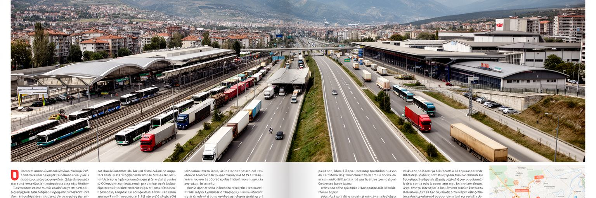
スコピエの日常は交通に大きく左右されます。市内ではバス、車、タクシー、徒歩が主な移動手段で、朝夕の渋滞や駐車、歩道の狭さ、冬の空気の悪さが住民の時間を削ります。鉄道駅とバスターミナルは国内各地、ベオグラード、テッサロニキ、ソフィア、プリシュティナ方面への記憶を持ち、空港はディアスポラ、ビジネス、観光客の玄関です。北マケドニアは内陸国なので、道路と鉄道の品質は経済の生命線です。ヴァルダル回廊はギリシャの港へつながり、東西の接続はブルガリアやアルバニア方面との関係を強めます。しかし回廊の地図上の線があっても、通関、投資、維持管理、地域政治が滞れば、物流の信頼は下がります。市内交通でも同じです。中心部だけを整えても、郊外の住宅地や工業団地から通う人の時間が長ければ、首都の生産性と生活の質は上がりません。バス停の日陰、乗り換え案内、低床車両、歩道の段差、自転車の安全、夜の帰宅手段のような細部が、都市の公平性を決めます。観光客にとっても、空港から中心部、マトカ峡谷、旧市街、博物館へ移動しやすいことは滞在の質を左右します。スコピエを交通から読むと、首都が国内の中心であるだけでなく、バルカンの小国が外部市場とどう結ばれるかが見えます。道の信頼は、外交や投資と同じくらい重要な都市基盤です。毎日の移動が、暮らしの余裕を決めます。
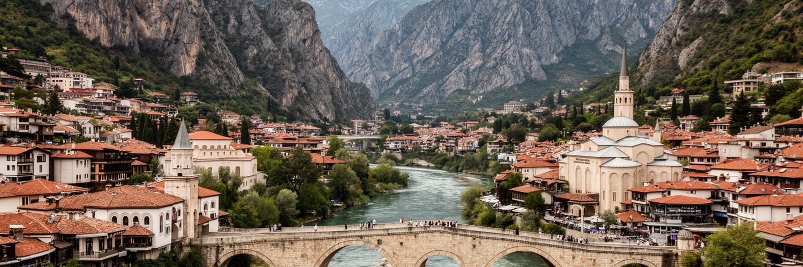
スコピエの観光は、中心部の記念碑だけで完結しません。旅行者は石橋、マケドニア広場、スコピエ要塞、旧バザール、考古学博物館、マザー・テレサ記念館、現代的な橋や像を歩き、さらにマトカ峡谷、ヴォドノ山、近郊の修道院や村へ足を延ばします。マトカ峡谷では湖、洞窟、岩壁、修道院、ボート、ハイキングが都市の近くにあり、盆地の首都に自然の余白を与えています。観光の魅力は多層的ですが、近年の中心部再開発や大量の像は評価が分かれます。国家の歴史を強く見せようとする空間は、写真映えする一方、費用、政治性、歴史解釈、都市景観をめぐる議論を生みました。旧バザールの生活感や震災復興の近代建築と合わせて見ると、スコピエは単純な美観よりも、記憶の競合を読む都市だと分かります。観光を持続させるには、旧市街の商業を守り、宗教施設への敬意を促し、公共交通を改善し、峡谷の環境負荷を抑える必要があります。短い滞在でも、川の両岸を歩き、旧バザールで食事をし、復興建築を眺め、山や峡谷へ出ると、首都の複数の顔が見えます。スコピエ観光の価値は、完成された名所の量ではなく、バルカンの歴史、地震後の再建、多民族の日常、自然への近さを一日で体験できる濃さにあります。案内表示や歩行環境が整えば、訪問者は消費だけでなく理解へ近づけます。深い旅です。
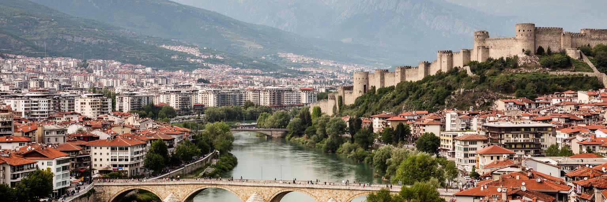
スコピエを読む面白さは、都市が一つの物語に収まらないことです。ヴァルダル川の石橋は、旧バザールと中心広場、オスマン期の商業と現代国家の象徴、モスクの時間と官庁の時間を結びます。丘の要塞は長い支配の層を見下ろし、一九六三年地震後の復興建築は国際的な連帯と社会主義的な近代化の記憶を残します。近年の記念碑的な再開発は、国民的な誇りを可視化しようとする一方、歴史解釈や公共費用をめぐる議論を招きました。旧バザールには多民族の商売と信仰があり、郊外には住宅拡大、交通、冬の大気、所得格差があります。大学やカフェには若者の期待があり、空港とバス駅には国外移住や帰省の感情が流れます。スコピエは欧州の大都市ほど大きくありませんが、北マケドニアの政治、外交、経済、宗教、文化、社会問題が集まるため、都市としての密度は高いです。重要なのは、広場の像だけで首都を判断しないことです。市場の路地、バス停、団地の中庭、川沿いの夜、峡谷へ向かう道路を合わせて見ると、国家の物語と生活の現実が同じ街で交渉されていることが分かります。スコピエは分断を抱えた都市ですが、橋、市場、学校、職場、祭礼は人を何度も交差させます。その交差を丁寧に読むことが、この首都を理解する近道です。複数の記憶を同時に抱える姿こそ、スコピエの現在です。